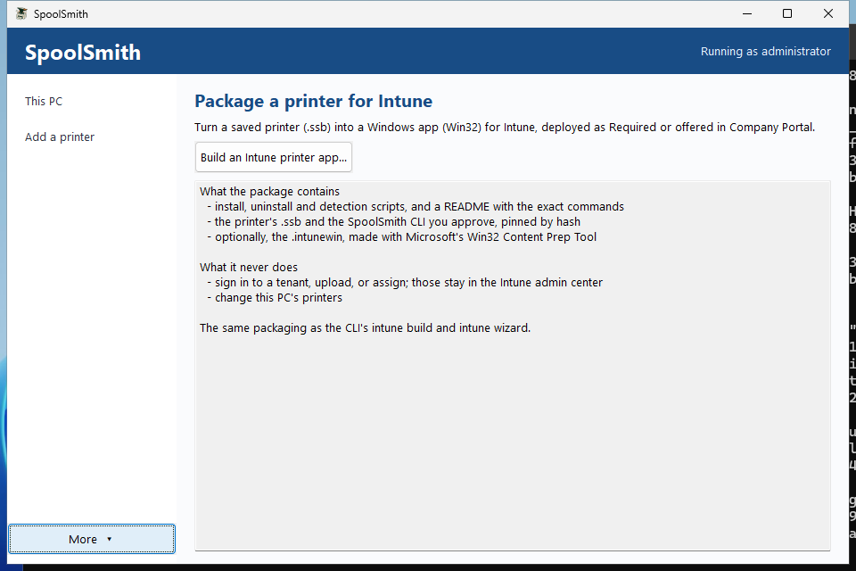

Workflow
Package a printer for Intune
Turn one printer file into a reviewable Win32 app, with silent install, uninstall and detection scripts and the exact commands to paste into Intune. With Microsoft's packaging tool beside SpoolSmith, you also get the finished .intunewin.
SpoolSmith never signs in to a tenant, uploads an app, or creates or assigns groups, and building a package never changes this PC's printers. You create, upload and assign the Win32 app in the Intune admin center, like any other app.
Before you start#
- Validate the printer first. Copy or capture it to a
.ssb, set it up on a test PC, and print a page. Check the queue name, address and driver. - One package is one printer. Use a single
.ssb. A printer set (.zip) isn't a package source, so package each of its files separately. - Decide where the driver comes from: embedded in the
.ssb(the default for copies), the supported local Brother archive, or a driver you deploy separately, which you confirm with--driver-prerequisiteor the matching wizard choice. - Use the current CLI.
spoolsmith capabilitiesmust reportSpoolSmith:intune-endpoint-v2:ssb,offline,status. Older builds and the GUI executable are refused as the package payload. The target PCs don't need SpoolSmith or the MSI installed, because each package carries the CLI it was reviewed with, pinned by hash.
On the Intune side you need an enrolled x64 pilot device, the right licensing, and an admin who can create and assign Win32 apps. See Microsoft's Win32 app prerequisites.
Build the package#
With the wizard#
In the desktop, choose More → Intune package → Build an Intune printer app... In a terminal, run .\spoolsmith.exe intune wizard. Both have two steps:
- Package settings. Choose the printer file and the approved CLI. The app name comes from the queue name, the revision starts at 1, a stable deployment ID is suggested, and the CLI's SHA-256 is worked out for you. Advanced settings holds the ID, revision, location, description, a hash override, offline setup and adoption. Validate and preview package moves on.
- Review and export. Check the destination, ID, commands, hashes, target, driver and policy, then export. Back to settings discards the review, and you validate again.

The wizard keeps the reviewed payload hashes until export, so the files you reviewed are the files that get packaged.
From a script#
.\spoolsmith.exe intune build `
--profile .\profiles\accounting.ssb `
--binary .\spoolsmith.exe --dry-run--dry-run shows the manifest and destination and writes nothing; run it again without --dry-run to export. Add --driver-prerequisite when the file carries no driver. If you preview and export in separate runs, pass the reviewed --binary-sha256 and --output to pin them. To update an existing deployment, keep its ID and raise the revision:
.\spoolsmith.exe intune build `
--profile .\profiles\accounting.ssb `
--binary .\spoolsmith.exe --binary-sha256 '<approved SHA-256>' `
--id indy-accounting --revision 2 --name 'Accounting Copier' `
--location Indianapolis --output .\accounting-r2 --dry-runThe .intunewin file#
Put Microsoft's IntuneWinAppUtil.exe next to spoolsmith.exe (or spoolsmith-gui.exe), and all three entry points also produce install.intunewin in a new <export folder>-intunewin folder. --content-prep-tool and --content-prep-output (or the desktop review page's fields) point elsewhere, and --no-content-prep skips it. Without the tool, the export's README.txt names the exact command to run yourself.
What the export contains#
install.ps1, uninstall.ps1, detect.ps1, runtime.ps1, spoolsmith.exe, a settings-only profile.ssb, deployment.json and README.txt. It also contains bundle.ssb when the file carries a driver, or driver.exe for the vendor archive. Every payload is pinned by SHA-256 and checked again at export. The export goes to a new folder (by default <id>-r<revision> next to the file), never an existing one. The scripts are unsigned UTF-8, so apply your script-signing policy if you enforce one.
Upload to Intune#
- Create a Windows app (Win32), upload the
.intunewin, and copy the install and uninstall commands from the export'sREADME.txt. - Set the install behavior to System, require x64, and set a 15-minute install limit. Each CLI run inside is capped at ten minutes.
- Upload
detect.ps1as a custom detection script, and choose No for running it as a 32-bit process. - Replace the default return codes with these:
| Code | Intune | Meaning |
|---|---|---|
0 | Success | Configured and verified locally, or removed or already absent. |
1 | Failed | Inventory, conflict, package verification, execution or wrapper failure. Check the logs. |
2 | Failed | Invalid file, deployment inputs or arguments. |
3 | Failed | The printer reported a different identity. (An unreachable printer falls back to offline setup instead.) |
4 | Failed | Elevation or driver prerequisite missing. |
5 | Failed | Confirmation contract failed. The generated scripts always supply approval. |
1618 | Retry | Another SpoolSmith deployment holds the machine lock. |
1460 | Retry | The CLI timed out. Check for partial state before retrying. |
No reboot codes are generated. Signature and configuration failures are deliberately not mapped to Retry, because a person needs to look at them.
What detection checks#
Detection succeeds only when the intended revision and the local queue, driver, address and protocol all match. It never contacts the printer. On any mismatch, missing state, or install still in progress, it exits non-zero with no output, as Microsoft's custom detection rules require.
On the endpoint#
Installation checks the printer's identity first. If the printer is unreachable or never confirms its identity, installation falls back to offline setup from the reviewed settings and logs\lifecycle.log records it. A conflicting identity still fails with code 3. Choosing Offline setup when you build the package skips the check from the start, which suits PCs prepared off-site. Either way, test printing once the PC can reach the printer.
Assign it#
- Required assignments provision the printer automatically.
- Available assignments offer it in Company Portal; pilot with a standard user. Target users for personal printer choices, and target devices for shared machines where location decides the printer.
- Queues created as SYSTEM are machine-wide. An assignment controls delivery of the app, not permission to print.
- For user-initiated removal, enable Allow available uninstall. Intune hides it for apps with dependencies, which matters if you model a separately managed driver as one.
Updates and retirement#
A deployment ID owns one queue name. To change the address, driver, CLI or validation mode, keep the ID and raise the revision. Same-revision changes and downgrades are refused. SpoolSmith doesn't look up which revision is deployed, so keep track of that yourself.
- A first install refuses an existing queue unless you enabled adoption and it matches exactly. A queue owned by one deployment can't be adopted by another.
- Conflicting ports are never overwritten. Old ports stay after an address change, and shared drivers and ports are kept on removal.
- To rename a queue, uninstall the old deployment and deploy a new ID. Don't assign both at once.
- Removing a Required assignment doesn't remove the printer. Retire it with an explicit Uninstall assignment.
Protected state lives in %ProgramData%\SpoolSmith\Deployments\<id>, readable by SYSTEM and Administrators only. Each revision keeps what it needs for removal, so uninstall still works after Intune's cache is gone. After an interrupted install, retry the same revision or remove it before trying another.
Troubleshooting#
Start with logs\lifecycle.log in the deployment folder, then the per-run *.stdout.log and *.stderr.log. spoolsmith status --profile <file> reports local mismatches without contacting the printer. Hash or signature failures need an approved replacement payload, never a bypass.
Validation status#
The endpoint lifecycle (install, detection, protected state, standard-user denials, revision updates and removal) was validated as SYSTEM on real Windows, and the desktop wizard on real hardware. Delivery through a real Intune tenant and Company Portal hasn't been validated yet. The full deployment reference has the pilot checklist and every edge-case rule.
Something wrong or unclear? Open an issue or edit this page.